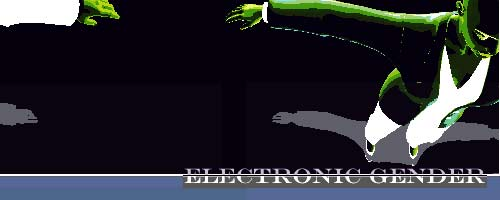
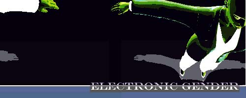

|
Post-industrial high capitalist economies are developing into cultures of "play" where a pervasive "play ethic" is superseding the work ethic.1 Within technoculture and disseminating out across class, ethnic and geographical barriers, younger generations are devoting increasing recreation time to addictive computer games. Echoing the re-patterning of society in the wake of print, and later radio and television, computer games are socializing the younger generations of post-industrial citizens, reorganizing their world-view and thought parameters along the axes of fighting games, first person shooters, adventure games, strategy games, MUDs and networked Internet games.2
Yet postmodern and feminist theoreticians, art and technology critics and even popular culture critics have for the most part shunned the increasing popularity of computer games, lending their attention to the far less ubiquitous technologies of Virtual Reality or even of the Web. Within this theoretical vacuum, my research of the "1st person shooter/adventure game with female heroine" genre, exemplified in the popular game "Tombraider",3 has roved from gender analysis of film, particularly the horror film genre, to science fiction, to Virtual Reality theory, to Internet/Identity theory, to Queer theory, to my own ethnographic surveys conducted on the Internet.4 My research and analysis then delve into the subculture of subversive game hacking and the production of game patches, an art strategy that provides an opportunity for feminists to influence the formation of new computer game gender configurations. Before Tombraider
"When one considers the progress that has been made during the mediums first 25 years, it is enormous. Even film, another rapidly developing medium, was, for the most part, still black and white and silent after its first quarter century. Comparing Pong to 64-bit CD-ROM-based games, it is difficult to say what even the next five years will bring, much less what the effects of such future technology will be." -Mark J. P. Wolf, Prof. of Communications5
"Sometimes a killer body just isnt enough." -back of "Tombraider" cd case
The first computer games displayed simple abstract graphics, structuring visual on/off-screen space and interactivity in a variety of novel configurations.6 With ever increasing graphical processessing speed, computer games are catching up to the dream of virtual reality, of a holistic Cartesian 3-D space navigated/created by the individual viewer, a dream rooted in Western culture from Renaissance painting to film. The actions occurring in this cyberspace are not virtual replacements of everyday social relations, as predicted by cyberpunk novelists, but a codified set of behaviors particular to certain game genres. In the case of the first person shooter/adventure game, itself a hybrid of what were once two genres (1st person shooter and adventure), activities are relegated to fighting attackers, exploration of "undiscovered" spaces, and puzzle solving. Until recently, the avatars in these games were almost exclusively male, with the exception of the princess offered as game prize in "Prince of Persia", "Double Dragon" and other games with women as battle trophies. This notable feminine absence led feminist theoretician Gillian Skirrow to locate femininity in the computer games womb-like tunneling architecture. Enter Lara Croft, (1996) the first immensely popular female game action heroine. Countless fan Web sites attest to her international status as "cyberstar" but she embodies a complex and impure history which shares little in common with the networked, non-individualistic, community-oriented values heralded by cyberfeminists on the Internet. The Gender Make-up of Lara Croft My approach to the Lara Croft archetype is best served by using an analytical model that is cyborgian, piece-meal, an analysis that contains multiple lines of simultaneous processing. This analysis does not privilege one theoretical lens antithetically to others; its form resembles rather a multidimensional matrix stack of interlocking data whose shifting gender matrices push upward to the surface. a. Lara Croft is the monstrous offspring of science, an idealized eternally young female automaton, a malleable, well-trained techno-puppet created by and for the male gaze.7 The popular Nuderaider patch, a game add-on that strips Lara Crofts clothing is evidence of this gender-subject configuration. The fusion of femininity, death and technology in characters like Lara Croft is a lucrative and enduring formula in capitalist market-based economies, a potent combination noted as early as 1951 in Marshall McLuhans essay, "The Mechanical Bride"8. Lara Croft traces her lineage to the female robot in Fritz Langs "Metropolis", mannequins, blow-up dolls and comic book heroines. She is a product of the mechanization of bodies beginning in the Industrial Revolution9; her fetishized beauty resides in her slick and glistening 3-D generated polygons, evolved from clunky robotic metals into more appropriate attire for Information Society. 
Figure 1. Screenshot from Nuderaider b. Lara Croft is a drag queen. The predominantly male players of games like "Tombraider" identify with the female avatar, immersed in the conflicts of the game. Rigid gender roles are broken down, allowing young boys and men to experiment with "wearing" a feminine identity, mirroring the phenomenon of gender crossing in Internet chat rooms and MUDs as described by Internet sociologists Sandy Stone and Sherry Turkle.10 Carol Clover has constructed a less celebratory reading of "the final girl", the female protaganist in slasher films like "Texas Chainsaw Massacre II"11. The "final girl" alone survives bloody conflict, her "phallicized body" operates as a "stand-in" vehicle for the male viewers repressed (never acknowledged) homoeroticism. c. Lara Croft is a dominatrix, a femme-fatale. Some male game players in my ethnographic survey indicated an affinity for the victims of the female computer game protagonist. These players may likely derive masochistic pleasure from Lara Crofts "cruel" and repeated destruction of her enemies. This subject configuration is also apparent in plug-ins and patches for games available on the Internet, for example the Marathon patch which replaces all the male attackers in "Marathon" with scantily-clad Amazons. d. Lara Croft is a positive role model for women and girls. Following the lead of the tough fictional women characters who predated women cyberpunk writers and a female cyberpunk audience, strong female characters in video games offer a possible entry point and a positive role model to women game players. In the sense that "being a bad girl can be good for women," (the inverse logic of Deborah Tolman and Tracy Higgins article entitled "How Being a Good Girl can be Bad for Women,"12) violent, tough and sexy women like Lara Croft would be better role models for girls than the few games produced for girls (not for women) like "Barbie-Dressup", "Ms. Pacman" and the gentle, graphically simple games put out by the "games for girls" company, Purple Moon.13 e. Lara Croft watches Xena, Amazon Princess. B-grade television heroine, Xena (actress, Lucy Lawless) has made several appearances in New York lesbian night clubs, a crowd where she is quite popular. Why should fantasies of violence be exclusively a heterosexist and/or masculine domain? Cogent female heroines like Xena and Lara Croft offer women an opportunity to indulge in the abject pleasures of violent bloody conflict.14 
Figure 2. Screen shot from Tombraider II
Game Plugins and Patches as (Feminist?) Hacker Art
"It's nice to think of artists as hackers who endeavor to get inside cultural systems and make them do things they were never intended to do: artists as culture hackers." -Brett Stalbaum15
The Internet provides the technoculture researcher with a visible mapping of desire, digital evidence of an internationally shared lust for the Nuderaider patch.16 A Web search for Tombraider produces innumerable fan sites requesting the Nuderaider patch and displaying Nuderaider screen shots. An older version of the official Tombraider homepage even contained a link to the NudeRaider patch. Nuderaider strips Lara Crofts already scant clothing to reveal polygonal tits and ass as she fights her way up the game levels, operating within the bounds of gender-subject configuration "a", Lara as object of the male gaze. Not all game patches so explicitly echo or reinforce a particular feature of the original game, (in the case of Nuderaider, an absurd exaggeration of Lara Crofts sex appeal). A more exhaustive, in-depth search for almost any first person shooter produces a strata of alternate and more subversive game scenarios in the form of game plugins and patches offered (usually for free) on game fans personal Web sites. Some game companies, like the producers of Marathon and the producers of Quake, have even capitalized on this wide-spread game hacking by packaging software with their games that makes it easier to manipulate and create new game scenarios. Some of the more amusing patches created by game hacker artists, (and they often create more than one), include the Doom patch that changes the attackers into monster-sized chickens and kangaroos, the Doom patch entitled "Barney and his Minions" and the Marathon patch that replaces all the characters with different colored Gumby dolls. These patches poke fun at the extremely macho codes of interaction in these games by replacing the standard adult male characters with androgynous animals and androgynous, goofy childrens fantasy characters.Although the category of "feminist game hacker art" is premature since there are very few women participating in this realm of cultural production17, there are gender configurations with female protagonists in patches that predate Tombraider, Resident Evil, and Forsaken. The Marathon Infinity patch "Tina Shapes" and "Tina Sounds" replaces the protagonist, "Infinity Bob" with a female "Tina." A Japanese Doom patch entitled "Otakon Doom" replaces the protagonist with a Japanese animation girlfighter named "Priss." Another Doom patch replaces all the characters in Doom with the cast from the movie "Aliens", including substituting Sigourney Weaver for the male protagonist. These patches suggest that the boundary between game patches and official games is permeable, that game patches not only subvert and diversify gender stereotypes in official games, but game hacker artists also are influencing the kinds of gender subject configurations that will pattern the production of future games. As such, game patches not only provide an index to what may be the next "Tombraider", game hacking offers a possible strategical means for feminists to participate in the formation of new gender configurations.
End Notes
Stone, Sandy. 1995. The War of Desire and Technology at the Close of the Mechanical Age. Cambridge: MIT Press, p. 9.
McCluhan, Marshall, "The Gutenberg Galaxy" in the Essential McLuhan, edited by Eric McLuhan and Frank Zingron, New York, NY : BasicBooks, 1995.
"Tombraider", starring Lara Croft, came out in 1996, followed by Tombraider II and is soon to be a major motion picture. There are rumors of other similar games soon to be released.
The survey contained multiple choice questions in respect to different power relations between game player and avatar and also collected demographic information regarding the gender and sexuality of game players. The survey was distributed to Tombraider fans on the Internet over a period of two months.
Wolf, Mark P., "Inventing Space: Toward a Taxonomy of On- and Off-Screen Space in Video Games" in Film Quarterly, Volume 51, Number 1, Fall 1997, p. 22.
Ibid.
Csikszentmihalyi, Chris, lecture presented at San Jose State University in April, 1998.
McCluhan, Marshall, "The Mechanical Bride" in the Essential McLuhan, edited by Eric McLuhan and Frank Zingron, New York, NY : BasicBooks, 1995.
Foucault, Michel. 1976. The History of Sexuality. New York: Random House, p. 106.
Turkle, Sherry 1995. Life on the Screen: Identity in the Age of the Internet. New York: Simon and Schuster, p. 10. Stone, Sandy.
Clover, Carol. 1992. Men, Women and Chainsaws: Gender in the Modern Horror Film. Princeton: Princeton University Press, p. 61.
Tolman, Deborah and Higgins, Tracy "How Being a Good Girl Can Be Bad for Girls" in Good Girls/Bad Girls ed. by Nan Bauer Maglin and Donna Perry. New Brunswick: Rutgers University Press.
Herz, J. C., Joystick nation : how videogames ate our quarters, won our hearts, and rewired our minds, J.C. Herz, Boston : Little, Brown, and Co., 1997.
Halberstam, Judith, Skin shows: gothic horror and the technology of monsters, Durham: Duke University Press, 1995.
Stalbaum, Brett, Interview in Rhizome, May 1, 1998.
A game "patch" is sometimes merely a bit of code that fixes a bug; patches do not always radically alter a game.
Some exceptions are cultural hackers from "the fine art' rather than popular art arena including the Australian women's artist group VNS Matrix and my own Marathon Hack, Madame Polly. (see Switch gallery) Also, as it is sometimes difficult to identify gender on the Internet, there may be women game hacker artists, although until now my leads have turned out to be men with feminine names.
|

 
